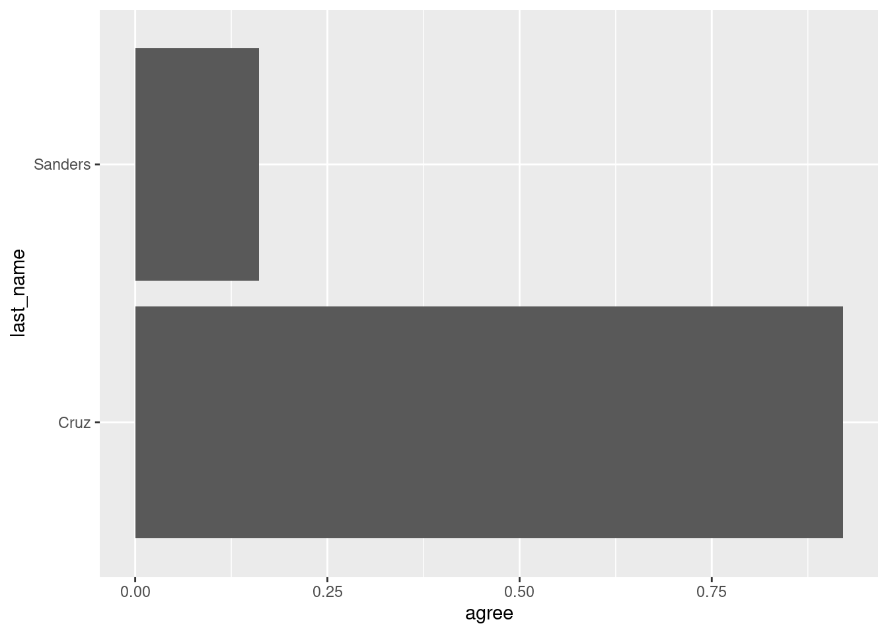
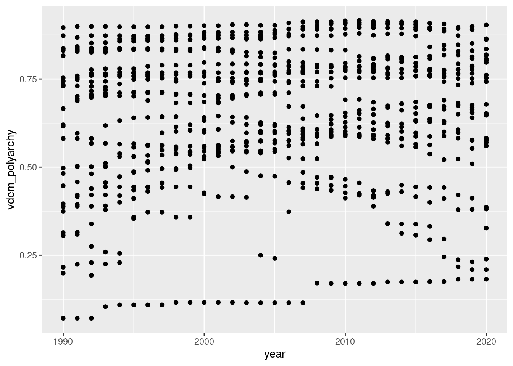
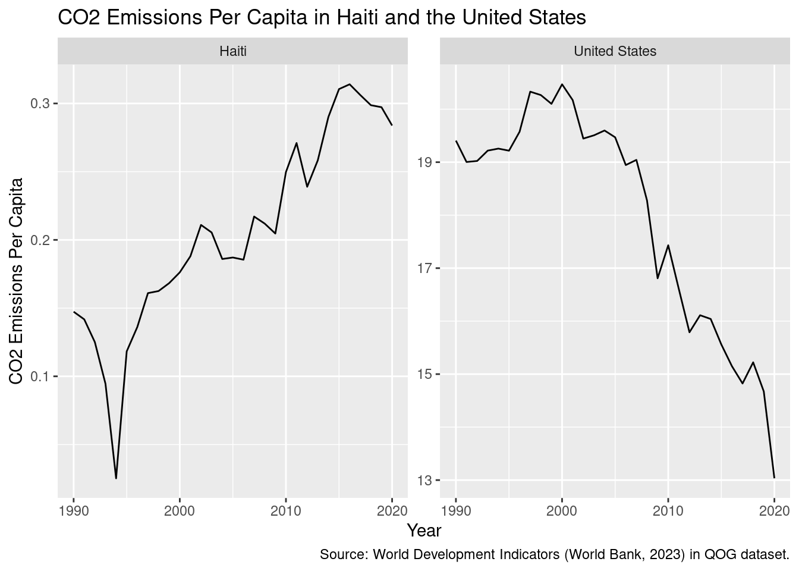
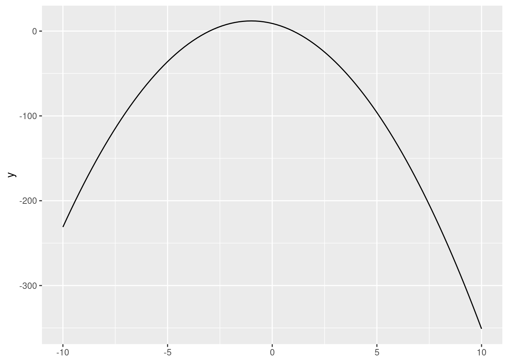
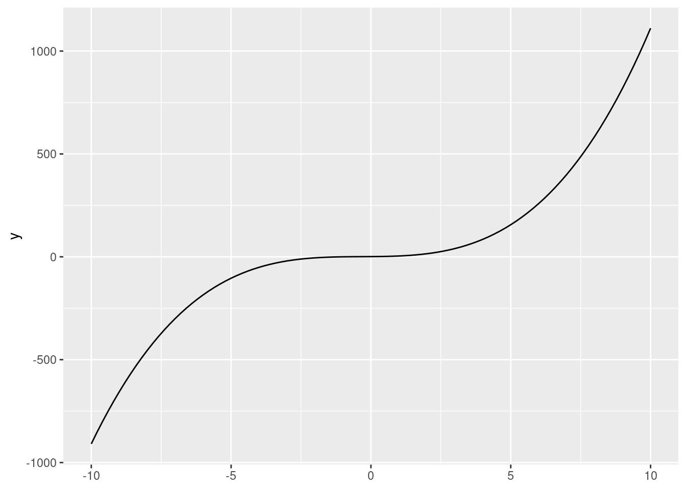
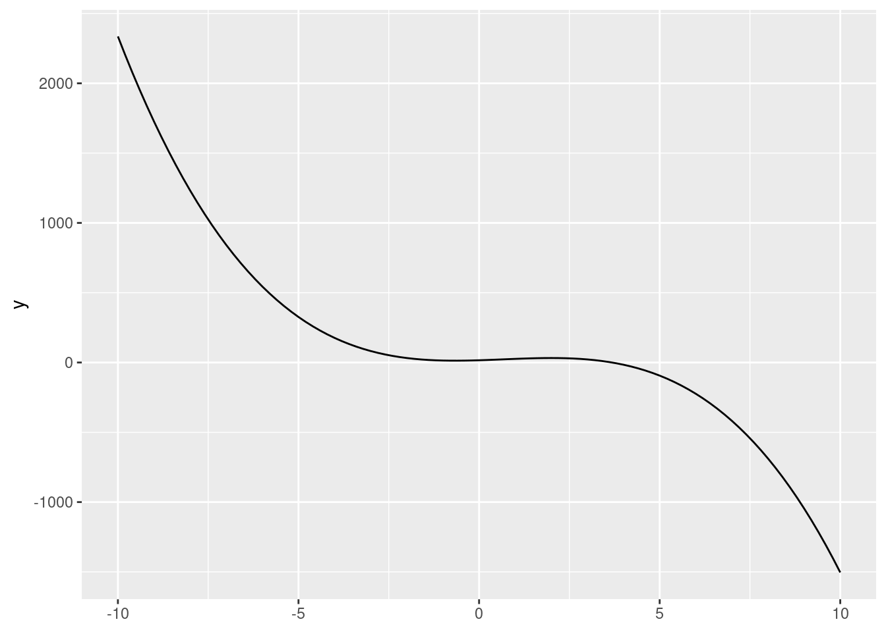
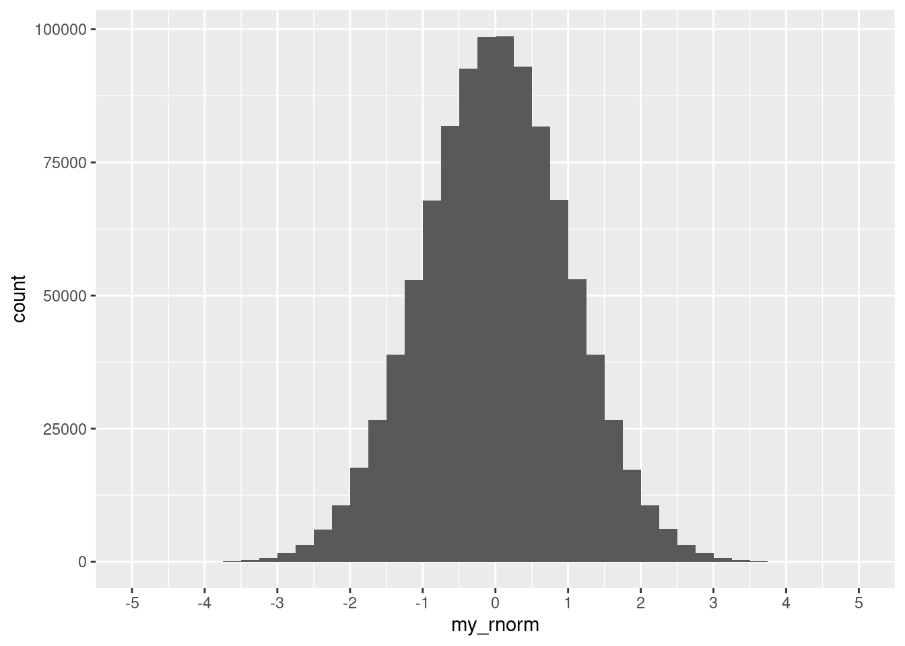
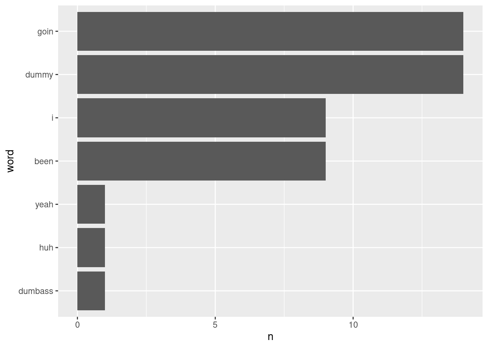

pi * 2[1] 6.283185Exercise
Create your own code block below and run a math operation.
pi * 2[1] 6.283185Exercise
Examine the help file of the
log()function. How can we compute the the base-10 logarithm of my_object? Your code:
# setup: these steps were executed before the exercise
my_object <- 10log() function.?logmy_object.log(my_object, base = 10)[1] 1# alternative:
log10(my_object)[1] 1Exercise
Obtain the maximum value of water content per 100g in the data. Your code:
# setup: these steps were executed before the exercise
my_character_vector <- c("Apple", "Orange", "Watermelon", "Banana")
my_data_frame <- data.frame(fruit = my_character_vector,
calories_per_100g = c(52, 47, 30, 89),
water_per_100g = c(85.6, 86.8, 91.4, 74.9))
my_data_framemax(my_data_frame$water_per_100g)[1] 91.4# setup: these steps were executed before the exercises
library(tidyverse)
trump_scores <- read_csv("data/trump_scores_538.csv")Exercise
Select the variables
last_name,party,num_votes, andagreefrom the data frame. Your code:
trump_scores |>
select(last_name, party, num_votes, agree)# A tibble: 122 × 4
last_name party num_votes agree
<chr> <chr> <dbl> <dbl>
1 Alexander R 118 0.890
2 Blunt R 128 0.906
3 Brown D 128 0.258
4 Burr R 121 0.893
5 Baldwin D 128 0.227
6 Boozman R 129 0.915
7 Blackburn R 131 0.885
8 Barrasso R 129 0.891
9 Bennet D 121 0.273
10 Blumenthal D 128 0.203
# ℹ 112 more rows# alternative
trump_scores |>
select(last_name, party:agree)# A tibble: 122 × 4
last_name party num_votes agree
<chr> <chr> <dbl> <dbl>
1 Alexander R 118 0.890
2 Blunt R 128 0.906
3 Brown D 128 0.258
4 Burr R 121 0.893
5 Baldwin D 128 0.227
6 Boozman R 129 0.915
7 Blackburn R 131 0.885
8 Barrasso R 129 0.891
9 Bennet D 121 0.273
10 Blumenthal D 128 0.203
# ℹ 112 more rowsExercise
Add a new column to the data frame, called
diff_agree, which subtractsagreeandagree_pred. How would you createabs_diff_agree, defined as the absolute value ofdiff_agree? Your code:Filter the data frame to only get senators for which we have information on fewer than (or equal to) five votes. Your code:
Filter the data frame to only get Democrats who agreed with Trump in at least 30% of votes. Your code:
diff_agree, which subtracts agree and agree_pred. How would you create abs_diff_agree, defined as the absolute value of diff_agree? Your code:trump_scores |>
mutate(diff_agree = agree - agree_pred) |>
select(last_name, matches("agree")) # just for clarity# A tibble: 122 × 4
last_name agree agree_pred diff_agree
<chr> <dbl> <dbl> <dbl>
1 Alexander 0.890 0.856 0.0336
2 Blunt 0.906 0.787 0.120
3 Brown 0.258 0.642 -0.384
4 Burr 0.893 0.560 0.333
5 Baldwin 0.227 0.510 -0.283
6 Boozman 0.915 0.851 0.0634
7 Blackburn 0.885 0.889 -0.00308
8 Barrasso 0.891 0.895 -0.00389
9 Bennet 0.273 0.417 -0.144
10 Blumenthal 0.203 0.294 -0.0910
# ℹ 112 more rowstrump_scores |>
mutate(abs_diff_agree = abs(agree - agree_pred)) |>
select(last_name, matches("agree")) # just for clarity# A tibble: 122 × 4
last_name agree agree_pred abs_diff_agree
<chr> <dbl> <dbl> <dbl>
1 Alexander 0.890 0.856 0.0336
2 Blunt 0.906 0.787 0.120
3 Brown 0.258 0.642 0.384
4 Burr 0.893 0.560 0.333
5 Baldwin 0.227 0.510 0.283
6 Boozman 0.915 0.851 0.0634
7 Blackburn 0.885 0.889 0.00308
8 Barrasso 0.891 0.895 0.00389
9 Bennet 0.273 0.417 0.144
10 Blumenthal 0.203 0.294 0.0910
# ℹ 112 more rowstrump_scores |>
filter(num_votes <= 5)# A tibble: 5 × 8
bioguide last_name state party num_votes agree agree_pred margin_trump
<chr> <chr> <chr> <chr> <dbl> <dbl> <dbl> <dbl>
1 H000273 Hickenlooper CO D 2 0 0.0302 -4.91
2 H000601 Hagerty TN R 2 0 0.115 26.0
3 K000377 Kelly AZ D 5 0.2 0.262 3.55
4 L000571 Lummis WY R 2 0.5 0.225 46.3
5 T000278 Tuberville AL R 2 1 0.123 27.7 trump_scores |>
filter(party == "D" & agree >= 0.3)# A tibble: 11 × 8
bioguide last_name state party num_votes agree agree_pred margin_trump
<chr> <chr> <chr> <chr> <dbl> <dbl> <dbl> <dbl>
1 D000607 Donnelly IN D 83 0.542 0.833 19.2
2 H001069 Heitkamp ND D 84 0.548 0.915 35.7
3 J000300 Jones AL D 68 0.353 0.845 27.7
4 K000383 King ME D 129 0.372 0.441 -2.96
5 M001170 McCaskill MO D 83 0.458 0.830 18.6
6 M001183 Manchin WV D 129 0.504 0.893 42.2
7 N000032 Nelson FL D 83 0.434 0.568 1.20
8 R000608 Rosen NV D 136 0.346 0.604 -2.42
9 S001191 Sinema AZ D 135 0.504 0.398 3.55
10 T000464 Tester MT D 129 0.302 0.805 20.4
11 W000805 Warner VA D 129 0.349 0.401 -5.32Exercise
Arrange the data by
diff_pred, the difference between agreement and predicted agreement with Trump. (You should have code on how to create this variable from the last exercise). Your code:
trump_scores |>
mutate(diff_agree = agree - agree_pred) |>
arrange(diff_agree)# A tibble: 122 × 9
bioguide last_name state party num_votes agree agree_pred margin_trump
<chr> <chr> <chr> <chr> <dbl> <dbl> <dbl> <dbl>
1 T000464 Tester MT D 129 0.302 0.805 20.4
2 J000300 Jones AL D 68 0.353 0.845 27.7
3 M001183 Manchin WV D 129 0.504 0.893 42.2
4 B000944 Brown OH D 128 0.258 0.642 8.13
5 M001170 McCaskill MO D 83 0.458 0.830 18.6
6 H001069 Heitkamp ND D 84 0.548 0.915 35.7
7 D000607 Donnelly IN D 83 0.542 0.833 19.2
8 B001230 Baldwin WI D 128 0.227 0.510 0.764
9 F000457 Franken MN D 55 0.236 0.495 -1.52
10 R000608 Rosen NV D 136 0.346 0.604 -2.42
# ℹ 112 more rows
# ℹ 1 more variable: diff_agree <dbl>Exercise
Obtain the maximum absolute difference in agreement with Trump (the
abs_diff_agreevariable from before) for each party.
trump_scores |>
mutate(abs_diff_agree = abs(agree - agree_pred)) |>
summarize(max_abs_diff = max(abs_diff_agree),
.by = party)# A tibble: 2 × 2
party max_abs_diff
<chr> <dbl>
1 R 0.877
2 D 0.503Exercise
Draw a column plot with the agreement with Trump of Bernie Sanders and Ted Cruz. What happens if you use
last_nameas theyaesthetic mapping andagreein thexaesthetic mapping? Your code:
# setup: this step was executed before the exercise
trump_scores_ss <- trump_scores |>
filter(num_votes >= 10)ggplot(trump_scores_ss |> filter(last_name %in% c("Cruz", "Sanders")),
aes(y = last_name, x = agree)) +
geom_col()
# alternative
ggplot(trump_scores_ss |> filter(last_name == "Cruz" | last_name == "Sanders"),
aes(y = last_name, x = agree)) +
geom_col()
Exercise
Get the product of the first three elements of vector \(d\). Write the notation by hand and use R to obtain the number.
\[\overrightarrow d = \begin{bmatrix} 12 & 7 & -2 & 3 & 1 \end{bmatrix}\]
# setup: these steps were executed before the exercise
vector_d <- c(12, 7, -2, 3, -1)\[\prod_{i=1}^3 d_i = 12 \cdot 7 \cdot (-2) = -168\]
prod(vector_d[1:3])[1] -168Exercise
- Calculate \(A + B\) \[A= \begin{bmatrix} 1 & 0 \\ -2 & -1 \end{bmatrix}\]
\[B = \begin{bmatrix} 5 & 1 \\ 2 & -1 \end{bmatrix}\]
- Calculate \(A - B\) \[A= \begin{bmatrix} 6 & -2 & 8 & 12 \\ 4 & 42 & 8 & -6 \end{bmatrix}\] \[B = \begin{bmatrix} 18 & 42 & 3 & 7 \\ 0 & -42 & 15 & 4 \end{bmatrix}\]
A1 <- matrix(c(1,-2,0,-1), nrow = 2)
B1 <- matrix(c(5,2,1,-1), nrow = 2)
A1 + B1 [,1] [,2]
[1,] 6 1
[2,] 0 -2A2 <- matrix(c(6,4,-2,42,8,8,12,-6), nrow = 2)
B2 <- matrix(c(18,0,42,-42,3,15,7,4), nrow = 2)
A2 - B2 [,1] [,2] [,3] [,4]
[1,] -12 -44 5 5
[2,] 4 84 -7 -10Exercise
Calculate \(2\times A\) and \(-3 \times B\). Again, do one by hand and the other one using R. \[A= \begin{bmatrix} 1 & 4 & 8 \\ 0 & -1 & 3 \end{bmatrix}\] \[ B = \begin{bmatrix} -15 & 1 & 5 \\ 2 & -42 & 0 \\ 7 & 1 & 6 \end{bmatrix}\]
A3 <- matrix(c(1,0,4,-1,8,3), nrow = 2)
2 * A3 [,1] [,2] [,3]
[1,] 2 8 16
[2,] 0 -2 6B3 <- matrix(c(-15,2,7,1,-42,1,5,0,6), nrow = 3)
-3 * B3 [,1] [,2] [,3]
[1,] 45 -3 -15
[2,] -6 126 0
[3,] -21 -3 -18Exercise
- Create a dummy variable,
d_large_pop, for whether the country-year has a population of more than 1 million. Then compute its mean. Your code:- Which countries are recorded as “Never colonized”? Change their values to other reasonable codings and compute a tabulation with
count(). Your code:
# setup: these steps were executed before the exercise
library(tidyverse)
qog_csv <- read_csv("data/sample_qog_bas_ts_jan23.csv")
qog <- qog_csvd_large_pop.qog |>
mutate(d_large_pop = if_else(wdi_pop >= 1000000, 1, 0)) |>
count(d_large_pop) # to check if it went well# A tibble: 2 × 2
d_large_pop n
<dbl> <int>
1 0 341
2 1 744count().qog |>
filter(ht_colonial == "Never colonized") |>
count(cname)# A tibble: 2 × 2
cname n
<chr> <int>
1 Canada 31
2 United States 31qog |>
mutate(ht_colonial_recoded = case_when(
cname == "Canada" ~ "French/British",
cname == "United States" ~ "British",
.default = ht_colonial
)) |>
count(ht_colonial_recoded)# A tibble: 6 × 2
ht_colonial_recoded n
<chr> <int>
1 British 403
2 Dutch 31
3 French 31
4 French/British 31
5 Portuguese 31
6 Spanish 558Exercise
Calculate the median value of the corruption variable for each region (i.e., perform a grouped summary). Your code:
qog |>
summarize(med_corr = median(vdem_corr, na.rm = T), .by = region)# A tibble: 4 × 2
region med_corr
<chr> <dbl>
1 Caribbean 0.301
2 South America 0.531
3 Central America 0.734
4 Northern America 0.0505Exercise
Convert back
gdp_longto a wide format usingpivot_wider(). Check out the help file using?pivot_wider. Your code:
# setup: these steps were executed before the exercise
library(readxl)
gdp <- read_excel("data/wdi_gdp_ppp.xlsx")
gdp_long <- gdp |>
pivot_longer(cols = -c(country_name, country_code),
names_to = "year",
values_to = "wdi_gdp_ppp",
names_transform = as.integer) gdp_long |>
pivot_wider(id_cols = c(country_name, country_code), # can omit in this case too
values_from = wdi_gdp_ppp,
names_from = year) # A tibble: 266 × 35
country_name country_code `1990` `1991` `1992` `1993` `1994`
<chr> <chr> <dbl> <dbl> <dbl> <dbl> <dbl>
1 Aruba ABW 2.03e 9 2.19e 9 2.32e 9 2.48e 9 2.69e 9
2 Africa Eastern and… AFE 9.41e11 9.42e11 9.23e11 9.19e11 9.35e11
3 Afghanistan AFG NA NA NA NA NA
4 Africa Western and… AFW 5.76e11 5.84e11 5.98e11 5.92e11 5.91e11
5 Angola AGO 6.85e10 6.92e10 6.52e10 4.95e10 5.02e10
6 Albania ALB 1.59e10 1.14e10 1.06e10 1.16e10 1.26e10
7 Andorra AND NA NA NA NA NA
8 Arab World ARB 2.19e12 2.25e12 2.35e12 2.41e12 2.48e12
9 United Arab Emirat… ARE 2.01e11 2.03e11 2.10e11 2.12e11 2.27e11
10 Argentina ARG 4.61e11 5.04e11 5.43e11 5.88e11 6.22e11
# ℹ 256 more rows
# ℹ 28 more variables: `1995` <dbl>, `1996` <dbl>, `1997` <dbl>, `1998` <dbl>,
# `1999` <dbl>, `2000` <dbl>, `2001` <dbl>, `2002` <dbl>, `2003` <dbl>,
# `2004` <dbl>, `2005` <dbl>, `2006` <dbl>, `2007` <dbl>, `2008` <dbl>,
# `2009` <dbl>, `2010` <dbl>, `2011` <dbl>, `2012` <dbl>, `2013` <dbl>,
# `2014` <dbl>, `2015` <dbl>, `2016` <dbl>, `2017` <dbl>, `2018` <dbl>,
# `2019` <dbl>, `2020` <dbl>, `2021` <dbl>, `2022` <dbl>Exercise
There is a dataset on country’s CO2 emissions, again from the World Bank (2023), in “data/wdi_co2.csv”. Load the dataset into R and add a new variable with its information,
wdi_co2, to ourqog_plusdata frame. Finally, compute the average values of CO2 emissions per capita, by country. Tip: this exercise requires you to do many steps—plan ahead before you start coding! Your code:
# setup: these steps were executed before the exercise
library(tidyverse)
qog <- read_csv("data/sample_qog_bas_ts_jan23.csv")
gdp <- readxl::read_excel("data/wdi_gdp_ppp.xlsx")
gdp_long <- gdp |>
pivot_longer(cols = -c(country_name, country_code),
names_to = "year",
values_to = "wdi_gdp_ppp",
names_transform = as.integer)
qog_plus <- left_join(qog,
gdp_long,
by = c("ccodealp" = "country_code",
"year"))emissions <- read_csv("data/wdi_co2.csv")Rows: 266 Columns: 35
── Column specification ────────────────────────────────────────────────────────
Delimiter: ","
chr (2): country_name, country_code
dbl (31): 1990, 1991, 1992, 1993, 1994, 1995, 1996, 1997, 1998, 1999, 2000, ...
lgl (2): 2021, 2022
ℹ Use `spec()` to retrieve the full column specification for this data.
ℹ Specify the column types or set `show_col_types = FALSE` to quiet this message.emissions_long <- emissions |>
pivot_longer(cols = -c(country_name, country_code),
names_to = "year",
values_to = "wdi_co2",
names_transform = as.integer)qog_plus data frame:qog_plus2 <- left_join(qog_plus,
emissions_long,
by = c("ccodealp" = "country_code",
"year"))Create column for emissions per capita (here we do per 1,000 people).
Summarize information to get mean values at the country level (remember that na.rm = T is always a conscious decision):
qog_plus2 |>
mutate(emissions_pc = 1000 * wdi_co2 / wdi_pop) |>
summarize(emissions_pc_country = mean(emissions_pc, na.rm = T),
.by = cname)# A tibble: 35 × 2
cname emissions_pc_country
<chr> <dbl>
1 Antigua and Barbuda 4.60
2 Argentina 3.71
3 Bahamas (the) 6.17
4 Barbados 4.53
5 Bolivia 1.36
6 Brazil 1.84
7 Belize 1.74
8 Canada 15.8
9 Chile 3.64
10 Colombia 1.54
# ℹ 25 more rowsExercise
Draw a scatterplot with time in the x-axis and democracy scores in the y-axis. Your code:
ggplot(qog_plus2) + aes(year, vdem_polyarchy) + geom_point()Warning: Removed 248 rows containing missing values (`geom_point()`).
Exercise
Using your merged dataset from the previous section, plot the trajectories of C02 per capita emissions for the US and Haiti. Use adequate scales.
ggplot(qog_plus2 |> filter(cname %in% c("Haiti", "United States")),
aes(x = year, y = 1000 * wdi_co2 / wdi_pop)) +
geom_line() +
facet_wrap(~cname, scales = "free_y") +
labs(x = "Year", y = "CO2 Emissions Per Capita",
title = "CO2 Emissions Per Capita in Haiti and the United States",
caption = "Source: World Development Indicators (World Bank, 2023) in QOG dataset.")
Exercise When graphed, vertical lines cannot touch functions at more than one point. Why? Which of the following represent functions?

Function ✅
Function ✅
NOT a function 🚫
Function ✅
Function ✅
NOT a function 🚫
Function ✅
NOT a function 🚫
Exercise
Create a function that calculates the area of a circle from its diameter. So
your_function(d = 6)should yield the same result as the example above. Your code:
# setup: these steps were executed before the exercise
circ_area_r <- function(r){
pi * r ^ 2
}
circ_area_r(r = 3)[1] 28.27433circ_area_d <- function(d){
pi * (d/2) ^ 2
}
circ_area_d(d = 6)[1] 28.27433Exercise
Graph the function \(y = x^2 + 2x - 10\), i.e., a quadratic function with \(a=1\), \(b=2\), and \(c=-10\). Next, try switching up these values and the
xlim =argument. How do they each alter the function (and plot)?
# setup: these steps were executed before the exercise
library(ggplot2)ggplot() +
stat_function(fun = function(x){x^2 + 2*x - 10},
xlim = c(-5, 5)) 
xlim = argument.ggplot() +
stat_function(fun = function(x){-3*x^2 - 6*x + 9},
xlim = c(-10, 10)) 
Exercise
We’ll briefly introduce Desmos, an online graphing calculator. Use Desmos to graph the following function \(y = 1x^3 + 1x^2 + 1x + 1\). What happens when you change the \(a\), \(b\), \(c\), and \(d\) parameters?
(we’ll show how to do this in R here, but you could use Desmos)
ggplot() +
stat_function(fun = function(x){x^3 + x^2 + x + 1},
xlim = c(-10, 10)) 
ggplot() +
stat_function(fun = function(x){-2*x^3 + 4*x^2 + 8*x + 16},
xlim = c(-10, 10)) 
Exercise
Solve the problems below, simplifying as much as you can. \[log_{10}(1000)\] \[log_2(\dfrac{8}{32})\] \[10^{log_{10}(300)}\] \[ln(1)\] \[ln(e^2)\] \[ln(5e)\]
log10(1000)[1] 3log2(8/32)[1] -210^(log10(300))[1] 300log(1)[1] 0log(exp(2))[1] 2log(5*exp(1))[1] 2.609438Exercise
Compute
g(f(5))using the definitions above. First do it manually, and then check your answer with R.
# setup: these steps were executed before the exercise
f <- function(x){x ^ 2}
g <- function(x){x - 3}\[f(5) = 5^2 = 25\] \[g(25) = 25 - 3 = 22\]
g(f(5)) # no pipeline approach[1] 22f(5) |> g() # pipeline approach[1] 22Exercise
- Use the slope formula to calculate the rate of change between 5 and 6.
- Use the slope formula to calculate the rate of change between 5 and 5.5.
- Use the slope formula to calculate the rate of change between 5 and 5.1.
(6^2 - 5^2) / (6 - 5)[1] 11(5.5^2 - 5^2) / (5.5 - 5)[1] 10.5(5.1^2 - 5^2) / (5.1 - 5)[1] 10.1Exercise
Use the differentiation rules we have covered so far to calculate the derivatives of \(y\) with respect to \(x\) of the following functions:
- \(y = 2x^2 + 10\)
- \(y = 5x^4 - \frac{2}{3}x^3\)
- \(y = 9 \sqrt x\)
- \(y = \frac{4}{x^2}\)
- \(y = ax^3 + b\), where \(a\) and \(b\) are constants.
- \(y = \frac{2w}{5}\)
\(4x\) (sum rule, constant rule, coefficient rule, power rule)
\(20x^3-2x^2\) (sum rule, coefficient rule, power rule)
\(\frac{-9}{2\sqrt x}\) (power rule)
\(-\frac{8}{x^3}\) (coefficient rule, power rule)
\(3ax^2\) (sum rule, constant rule, coefficient rule, power rule)
\(0\) (constant rule)
Exercise
Compute the following:
- \(\frac{d}{dx}(10e^x)\)
- \(\frac{d}{dx}(ln(x) - \frac{e^2}{3})\)
\(10e^x\) (coefficient rule, exponent rule)
\(\frac{1}{x}\) (difference rule, constant rule, logarithm rule)
Exercise
Use the differentiation rules we have covered so far to calculate the derivatives of \(y\) with respect to \(x\) of the following functions:
- \(x^3 \cdot x\)
- \(e^x \cdot x^2\)
- \((3x^4-8)^2\)
\(4x^3\) (power rule)
\(e^x x^2 + 2xe^x\) (product rule, exponent rule, power rule)
\(24x^3(3x^4-8)\) (chain rule, difference rule, constant rule, power rule)
Exercise
Take the partial derivative with respect to \(x\) and with respect to \(z\) of the following functions. What would the notation for each look like?
- \(y = 3xz - x\)
- \(x^3+z^3+x^4z^4\)
- \(e^{xz}\)
\(\frac{\delta}{\delta x}(3xz - x) = 3z - 1\) (difference rule, coefficient rule, power rule)
\(\frac{\delta}{\delta z}(3xz - x) = 3x\) (difference rule, constant rule, coefficient rule)
\(\frac{\delta}{\delta x}(x^3+z^3+x^4z^4) = 4x^3z^4+3x^2\) (add rule, coefficient rule, power rule)
\(\frac{\delta}{\delta z}(x^3+z^3+x^4z^4) = 4x^4z^3+3z^2\) (add rule, coefficient rule, power rule)
\(\frac{\delta}{\delta x}(e^{xz}) = e^{xz}z\) (chain rule, exponent rule, coefficient rule)
\(\frac{\delta}{\delta z}(e^{xz}) = e^{xz}x\) (chain rule, exponent rule, coefficient rule)
Exercise
Identify the global extrema of the function \(\displaystyle \frac{x^3}{3} - \frac{3}{2}x^2 -10x\) in the interval \([-6, 6]\).
\((\frac{x^3}{3} - \frac{3}{2}x^2 -10x)' = x^2 - 3x - 10\) (sum rule, coefficient rule, power rule)
$ x^2 - 3x - 10 = (x-5)(x+2)$
\((x-5)(x+2) = 0\)
\(x^*_1 = 5,\, x^*_2=-2\)
\((x^2 - 3x - 10)' = 2x -3\)
\(2x^*_1-3 = 2\cdot5-3 = 7\) (since it is positive, this is a minimum)
\(2x^*_2-3 = 2\cdot(-2)-3 = -7\) (since it is negative, this is a maximum)
Minimum critical point: \(f(5) = \frac{(5)^3}{3} - \frac{3}{2}(5)^2 -10 \cdot (5) = −45.8\overline{3}\).
Maximum critical point: \(f(-2) = \frac{(-2)^3}{3} - \frac{3}{2}(-2)^2 -10 \cdot (-2) = 11.\overline{3}\).
Lower bound: \(f(-6) = \frac{(-6)^3}{3} - \frac{3}{2}(-6)^2 -10 \cdot (-6) = −66\)
Upper bound: \(f(6) = \frac{(-6)^3}{3} - \frac{3}{2}(-6)^2 -10 \cdot (-6) = −42\)
So we conclude that, for the \([-6, 6]\) interval, the global minimum is at the lower bound (\(x=-6\)) and the global maximum is at the critical point at \(x=-2\).
Exercise
Solve the following indefinite integrals:
- \(\int x^2 \, dx\)
- \(\int 3x^2\, dx\)
- \(\int x\, dx\)
- \(\int (3x^2 + 2x - 7\,)dx\)
- \(\int \dfrac{2}{x}\,dx\)
\(\frac{x^3}{3} + C\) (power rule)
\(x^3 + C\) (coefficient rule, power rule)
\(\frac{x^2}{2} + C\) (power rule)
\(x^3 + x^2 - 7x + C\) (sum/difference rule, coefficient rule, power rule)
\(2 ln(x) + C\) (coefficient rule, reciprocal rule)
And solve the following definite integrals:
- \(\displaystyle\int_{1}^{7} x^2 \, dx\)
- \(\displaystyle\int_{1}^{10} 3x^2 \, dx\)
- \(\displaystyle\int_7^7 x\, dx\)
- \(\displaystyle\int_{1}^{5} 3x^2 + 2x - 7\,dx\)
- \(\int_{1}^{e} \dfrac{2}{x}\,dx\)
In the following, FTC stands for the Fundamental Theorem of Calculus
Exercise
Compute the probability of seeing between 1 and 10 voters of the candidate in a sample of 100 people.
pbinom(q = 10, size = 100, prob = 0.02) -
dbinom(x = 0, size = 100, prob = 0.02)[1] 0.8673748Exercise
Evaluate the CDF of \(Y \sim U(-2, 2)\) at point \(y = 1\). Use the formula and
punif().
\[A = F(1) = P(Y\leq 1) = 3 \cdot(1/4) = 0.75\]
punif(q = 1, min = -2, max = 2)[1] 0.75Exercise
What is the probability of obtaining a value above 1.96 or below -1.96 in a standard normal probability distribution? Hint: use the
pnorm()function.
pnorm(-1.96) + (1 - pnorm(1.96))[1] 0.04999579Exercise
Compute and plot
my_rnorm, a vector with one million draws from a Normal distribution \(Z\) with mean equal to zero and standard deviation equal to one (\(Z\sim N(0,1)\)). You can recycle code from what we did for the uniform distribution!
set.seed(1) # set a seed
my_rnorm <- rnorm(n = 1000000)
ggplot(data.frame(my_rnorm), aes(x = my_rnorm)) +
geom_histogram(binwidth = 0.25, boundary = 0, closed = "right") +
scale_x_continuous(breaks = seq(-5, 5, 1), limits = c(-5, 5))
Exercise
What score (out of 10) would you give Barbie or Oppenheimer? Write your score in one sentence (e.g., I would give Barbie seven of ten stars.) If you have not seen either, write a sentence about which you would like to see more.
Store that text as a string (
string3) and combine it with our existingcat_stringto produce a new concatenated string calledcat_string2. Finally, count the total number of characters withincat_string2. Your code:
# setup: these steps were executed before the exercise
library(stringr)
my_string <- "I know people who have seen the Barbie movie 2, 3, even 4 times!"
my_string2 <- "I wonder if they have seen Oppenheimer, too."
cat_string <- str_c(my_string, my_string2, sep = " ")string3 <- "I would give Barbie 7 out of 10 stars."
string3[1] "I would give Barbie 7 out of 10 stars."cat_string2 <- str_c(cat_string, string3, sep = " ")
cat_string2[1] "I know people who have seen the Barbie movie 2, 3, even 4 times! I wonder if they have seen Oppenheimer, too. I would give Barbie 7 out of 10 stars."str_length(cat_string2)[1] 148Exercise
Look up the lyrics to your favorite song at the moment (no guilty pleasures here!). Then, follow the process described above to count the words: store the text as a string, convert to a tibble, tokenize, and count.
When you are done counting, create a visualization for the chorus using the
ggplotcode above. Your code:
library(tidytext)
dummy <- c("I been goin' dummy (Huh)",
"I been goin' dummy (Goin' dummy)",
"I been goin' dummy (Goin' dummy)",
"I been goin' dummy (Goin' dummy)",
"I been goin' dummy (Yeah)",
"I been goin' dummy (Goin' dummy)",
"I been goin' dummy (Goin' dummy)",
"I been goin' dummy",
"Dumbass, I been goin' dummy")dummy_df <- tibble(line = 1:9, text = dummy)
dummy_df# A tibble: 9 × 2
line text
<int> <chr>
1 1 I been goin' dummy (Huh)
2 2 I been goin' dummy (Goin' dummy)
3 3 I been goin' dummy (Goin' dummy)
4 4 I been goin' dummy (Goin' dummy)
5 5 I been goin' dummy (Yeah)
6 6 I been goin' dummy (Goin' dummy)
7 7 I been goin' dummy (Goin' dummy)
8 8 I been goin' dummy
9 9 Dumbass, I been goin' dummy dummy_tok <- unnest_tokens(dummy_df, word, text)dummy_tok |>
count(word, sort = TRUE)# A tibble: 7 × 2
word n
<chr> <int>
1 dummy 14
2 goin 14
3 been 9
4 i 9
5 dumbass 1
6 huh 1
7 yeah 1dummy_tok |>
count(word, sort = TRUE) |>
mutate(word = reorder(word, n)) |>
ggplot(aes(n, word)) +
geom_col()